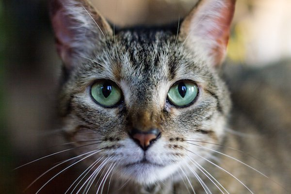
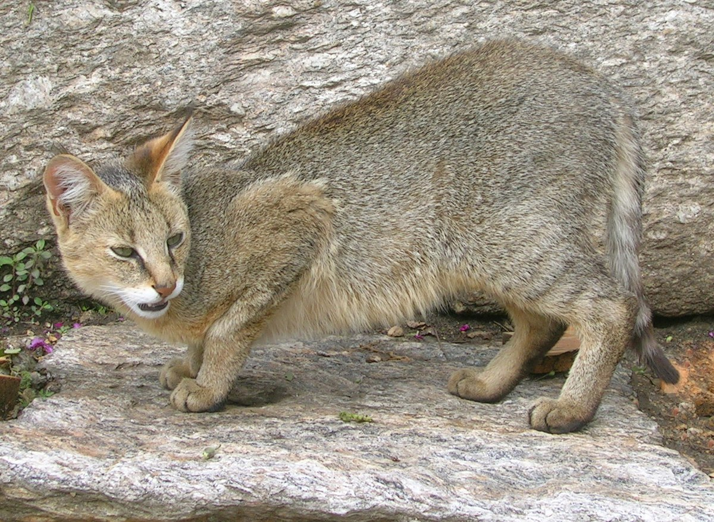
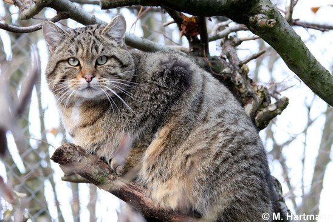
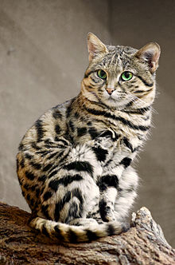
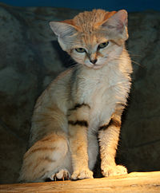

Felis catus

Traits
- The Felis Catus species are known for having a strong flexible body, quick reflexes, sharp teeth and retractable claws adapted to killing small prey.
- Link: https://en.wikipedia.org/wiki/Cat
Felis chaus

Traits
- The jungle cat is known for having a uniformly sandy, reddish-brown or grey fur without spots; melanistic and albino individuals are also known.
It is solitary in nature, except during the mating season and mother-kitten families. Adults maintain territories by urine spraying and scent marking.
Its preferred prey is small mammals and birds. It hunts by stalking its prey, followed by a sprint or a leap; the ears help in pinpointing the location of prey.
- Link: https://en.wikipedia.org/wiki/Jungle_cat
Felis silvestris

Traits
- The wildcat species differ in fur pattern, tail, and size: the European wildcat has long fur and a bushy tail with a rounded tip;
the smaller African wildcat is more faintly striped, has short sandy-gray fur and a tapering tail
- Link: https://en.wikipedia.org/wiki/Wildcat
Felis nigripes

Traits
- The fur of the black-footed cat varies in color from cinnamon-buff to tawny, and is patterned with black or brown spots that merge to form rings on the legs,
neck, and tail. These patterns provide the animals with camouflage; the backs of their ears, however, are the same color as the background color of their fur.
- Link: https://en.wikipedia.org/wiki/Black-footed_cat
Felis margarita

Traits
- Owing to long hairs covering the soles of its feet, the sand cat is well adapted to the extremes of a desert environment and tolerant of extremely hot
and cold temperatures. It inhabits both sandy and stony deserts, in areas far from water sources.
- Link: https://en.wikipedia.org/wiki/Sand_cat